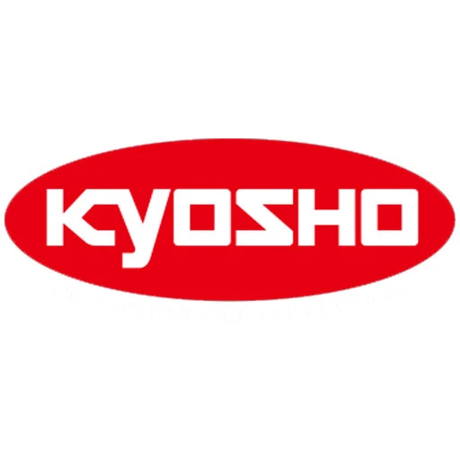

A long-running name in the hobby and model industry.
DIECAST DISTRICT / BRAND ENCYCLOPEDIA 14

Discover the world of Kyosho.
A collector's guide to Japanese model-making, detailed miniature vehicles, the 1:64 Miniature Car Collection and larger-scale replicas.
14THE COLLECTOR SERIES
QUICK NAVIGATION
Inside this collector's guide.
01 / THE BRAND
What is Kyosho?
Kyosho is a Japanese hobby and model brand with a broad history across radio-controlled vehicles, diecast models and other hobby products. In the diecast world, it is known for detailed replicas offered in several scales and for its Miniature Car Collection series.
Kyosho's range includes small-scale cars as well as larger display models. Product lines, materials and features differ, so check the exact model information rather than assuming every Kyosho release has the same construction or scale.
Especially familiar through Miniature Car Collection releases.
Also known for larger diecast and hobby models.
02 / BRAND DNA
What makes Kyosho special?
Japanese model-making
Kyosho has a long connection to Japan's hobby scene, with products spanning model cars, radio-controlled vehicles and other collectibles.
Miniature Car Collection
Its 1:64 Miniature Car Collection releases are well known among collectors, often organised around vehicle makers or automotive themes.
Wide range of subjects
Depending on the series, collectors may find Japanese sports cars, European marques, supercars, racing subjects and classic vehicles.
Different scales and formats
Kyosho produces models in more than one scale and format. Check each release for its size, material and display features.
03 / THE COLLECTION
Kyosho model ranges to know
Kyosho's catalogue has included a number of model families and themed collections over time. The names below are useful starting points; availability and current product details can vary.
Miniature Car Collection
Small-scale releases often organised around a manufacturer, vehicle family or automotive theme.
Diecast display models
Larger-scale replicas designed for collectors who want a more prominent shelf display.
Radio-controlled vehicles
Kyosho is also a major hobby name in radio-controlled cars and related products; these are distinct from static diecast collectibles.
Special collections
Selected releases focus on specific car makers, racing themes or vehicle categories.
Collector note: Some Miniature Car Collection releases have been sold in assorted or blind-box style formats. Check the packaging and seller description to understand whether the exact model is known before purchase.
04 / SCALE & CRAFT
Understanding Kyosho scales
Kyosho makes models in multiple scales. In 1:64, 64 units on the real vehicle are represented by one unit on the model. A real car measuring 4,480 mm long would be about 70 mm long at an exact 1:64 scale.
What to inspect
- Scale printed on the package
- Body shape and proportions
- Wheel design and alignment
- Paint finish and fine decoration
- Interior, lights and windows
- Base, case and packaging details
Material and features
Kyosho products can differ in construction and intended use. Check whether the specific model is diecast, resin, an RC product or another format.
Do not assume all releases have opening parts, rolling wheels or the same display case and base.
05 / BEGINNER'S GUIDE
How to start collecting Kyosho
Choose a scale
Decide whether you want compact 1:64 models or larger display pieces before building your collection.
Pick a vehicle theme
Try Japanese sports cars, supercars, classic vehicles or a manufacturer-focused Miniature Car Collection.
Check the exact product
Confirm the model name, scale, material, series, packaging and whether the pictured item is the one being sold.
Store it carefully
Keep models away from moisture, dust and direct sunlight. Retain boxes and inserts if you want to preserve the complete release.
Quick buying checklist
- Is the scale clearly stated?
- Does the listing identify the exact vehicle and series?
- Is the model diecast, resin or an RC product?
- Are the display case, base and accessories included?
- Is the seller reputable and the price reasonable?
06 / COLLECTOR KNOW-HOW
Rarity, value & care
Are older Kyosho models always valuable?
No. Age alone does not determine value. The exact series, vehicle, condition, completeness, availability and collector demand all matter. Compare the same release rather than using a different Kyosho model as a price reference.
What should you check when buying a collection release?
Confirm the exact model included, especially if the original packaging was assorted or blind-box style. Check for missing mirrors or other small parts, paint condition, case condition and packaging completeness.
How should you display Kyosho models?
Use a stable display case, avoid direct sunlight and damp locations, and handle small models carefully. Keep the original packaging and inserts together where possible.
07 / QUICK ANSWERS
Kyosho FAQs
Is Kyosho a Japanese brand?
Yes. Kyosho is a Japanese hobby and model company.
Is Kyosho known for 1:64 cars?
Yes. Its Miniature Car Collection is familiar to 1:64 collectors, although the wider Kyosho range includes other scales and products.
Does Kyosho only make diecast cars?
No. Its wider hobby range includes radio-controlled vehicles and other model products as well as static collectibles.
Are all Kyosho models sold individually?
Packaging and sales formats vary by series. Some past Miniature Car Collection releases used assorted or blind-box formats, so check the listing.
What should a beginner buy first?
Choose a scale and vehicle theme you enjoy, verify the exact model and condition, and set a comfortable budget.
REFERENCE DESK
Learn more
Diecast District is an independent collector-education project and is not affiliated with or endorsed by Kyosho. Product lines, specifications and availability may change; verify current details with the manufacturer or seller.